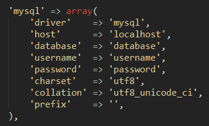
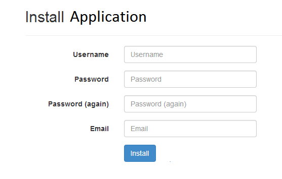
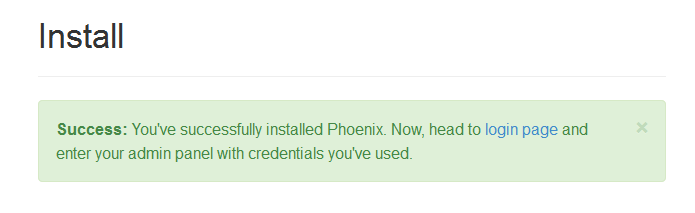
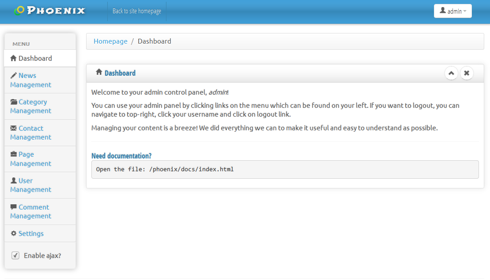

Arwell :: Documentation (for version 1.6)
Türkçe dökümantasyona geç?
Created: 05/03/2014
Made in: Kastamonu, TURKEY
By: Anıl ÜNAL
Email: iamaristona@gmail.com
Hi there! Thank you for purchasing Arwell. If you have any questions that are beyond the scope of this help file, please feel free to email via my user page contact form here or simply send me an email. Thank you!
Table of Contents
- 1. Preface
- 1.1 Thank you
- 1.2 Used technology
- 1.3 Scaffolding
- 1.4 Demo
- 1.5 Requirements
- 1.6 Patch Notes
- 2. Installation
- 2.1 PHP config changes
- 2.2 Using the Installer
- 2.3 Getting your custom Facebook application
- 3. Using Arwell
- 3.1 Let's login
- 3.2 Understanding permissions
- 4. Updating
- 4.1 Updating application
- 5. Credits
- 5.1 Credits
- 5.2 Notes to you
1. Preface
1.1 Thank you - top
Hi there! Thank you for purchasing Arwell. If you have any questions that are beyond the scope of this help file, please feel free to email via my user page contact form here or simply send me an email. Thank you!
1.2 Used technology - top
Arwell uses the powerful PHP framework Laravel 4 on backend. On the front end, it uses Bootstrap 3 for styling and used jQuery for customization. Arwell template is fully responsive and it uses a completely different, open-source admin template called Charisma, that is suitable for admin tasks.
Although you can use Arwell with different databases, the de-facto standard on hostings are MySQL, so I supported it by default. If you need to use something different than MySQL (such as PostgreSQL) you can easily do the change via configuration.
1.3 Scaffolding - top
Let me give you a short brief about folder system before you start using Arwell.
app: This is where the backend logic of Arwell is located.
app/config: Configuration files are located here.
bootstrap: Used by Laravel framework.
vendor: All the backend plugins can be found here.
assets/home: All the assets of Arwell Template is located here.
assets/admin: All the assets of Charisma template is located here.
uploads: Anything uploaded by you will be kept here.
docs: Documentation of application can be found here.
Files in the main directory are not important for you. They are configuration files of different tools I used while developing this application and completely harmless.
1.4 Demo - top
At the time of writing this documentation, demo project is up and live in this website.
1.5 Requirements - top
Arwell requires:
- PHP 5.3.7 and above (above patch 1.4.1 requires PHP 5.4)
- PDO extension
- PHP GD Extension
- PHP FileInfo Extension
- PHP Bcrypt Extension (comes builtin if you use PHP 5.3.7 and above)
- A database present
- Apache mod_rewrite module
1.6 Patch Notes - top
Patch 1.6
- Fixed alot of reported bugs, especially Facebook ones.
- Added sidebar enhancements plugin for free! It will make your sidebar even better.
- There is no longer an unique check for gag titles.
- URL structure changed slightly.
- Meme Generator plugin has been put for sale, and currently supported by this version.
- Facebook API has been made 2.0 compliant.
- Users will be prompted to pick an username if Facebook doesn't provide an email.
- A bug which affected Turkish language has been fixed.
- All the underlying packages has been updated to latest versions.
Patch 1.5
- Fixed alot of reported bugs.
- Removed catpcha feature.
- Added a plugin system. We will soon be sharing free and paid plugins!
- Structural changes within application.
- Admin panel now has a section specialized for pluins.
- You can install/uninstall plugins.
Patch 1.4.2
- Fixed some bugs related to installation.
- Made images to resize when uploaded.
Patch 1.4.1
- Fixed some bugs related to IE 11.
- Laravel version updated from 4.0 to 4.2.
- As a result of this version change, PHP requirement increased to PHP 5.4
- Added pace.js, which will show loading icon at top right of your website.
- You can now see sass and js files in __dev folder.
- Javascripts are minified for increased performance.
- "No gag is found." messages no longer appear.
- Localizations now translated "hour ago" messages properly.
- Documentation has been updated to reflect changes.
Patch 1.4
- New feature: Turkish (Türkçe) is now an officially supported language.
- New feature: Admins can now set default theme using Settings Management.
- New feature: Added "Next" button to gags.
- Improvement: Themes will now appear as multilingual.
- Improvement: Admin panel is now multilingual. So far, we support English and Turkish.
- Improvement: User management now show registration type.
- Bugfix: Banned users may no longer login using Facebook oAuth.
- Bugfix: Improved Facebook oAuth, as some users were previously experiencing issues with Facebook not returning usernames.
- Bugfix: Deleted gags will no longer leave trash data (e.g notifications) behind themself.
- Bugfix: Pinterest button now works properly.
- Misc: Documentation has been updated to reflect changes.
Patch 1.3
- New feature: Hot, Top, Trending and Fresh algorithms has been added.
- Top: Loads most liked gags of all time.
- Hot: Loads most liked gags of this month.
- Trending: Loads most liked gags of this week.
- Fresh: Loads gags in ascending order they were added.
- New feature: If there are more than 4 categories, they will be visible under "More" dropdown.
- Improvement: Contact page has been removed from navigation. It is moved to "Pages" widget.
- New feature: Gags now can be made approved or disapproved on Gag Management.
- New feature: Approving a gag makes the gag visible to everyone, disapprove does the opposite.
- Improvement: Gag Management section buttons looks slightly better and smaller now.
- New feature: Ajax state has been added to buttons. Users will get "Loading..." message when there is a task running on background. (such as upload)
- New feature: Optional "credits" section has been added to Gag uploads. (Some people needed this for legal/ethic purposes.)
- New feature: Gag dates are now visible on the section below gag title.
- Bugfix: Gifs can now be paused properly.
- Bugfix: A small bug related to watermarks has been fixed. Now they properly be attached to all images.
- Bugfix: A small bug related to wrong URL on notifications has been fixed.
- Bugfix: A small bug related which caused an exception when users clicked upload without selecting an image has been fixed.
- Bugfix: A small bug related to updating has been fixed. (It was nothing important)
- Misc: custom.js has been renamed to app.js
- Misc: Some typos has been corrected on the admin panel.
- Misc: Continuted to work on improving application architecture. Soon, all of my projects will share the same functionality automatically, which means I can work much faster and you can get more stable applications/more updates at a higher speed.
- Misc: Documentation has been updated to reflect changes.
Patch 1.2
- New feature: Watermark feature has been added. It automatically places your watermark image on image uploads.
- Admin can enable or disable watermark feature on Settings Management.
- Admin can change watermark image on Settings Management.
- Improvement: Settings Management has been updated.
- New feature: Widget Management has been added.
- Admin can create unlimited amount of widgets on the sidebar.
- Widgets can be used for anything, like Advertisements.
- Widgets support WYSIWYG editor, salt HTML, script, image uploads, gif uploads, SWF (Flash) uploads.
- New feature: Meta tags for seo has been updated. Now they will be different on every page.
- Improvement: Every library that application depends on has been updated to newest versions.
- Misc: Documentation has been updated to reflect changes.
- Bugfix: Some minor issues has been fixed on documentation.
Patch 1.1
- Bugfix: Gags will no longer be visible if they are not approved by admin.
- Bugfix: Infinite scroll no longer loads same gags more than once.
- Bugfix: Gif and vine videos now properly work on category pages.
- Bugfix: Fixed a bug related to wrong iframe and script usage on settings page.
- Bugfix: Website will no longer be blank if there is a missing script tag on Google Analytics code.
- New feature: Custom 404 page has been added. Design will be improved in next patch.
- New feature: Facebook login has been implemented using oAuth. We will be adding new oAuth providers in the future.
- Improvement: Added 1 second delay on infinite scroll feature on homepage.
- Improvement: Gif and vine play icons has been improved.
- Improvement: Avatar system has been improved. Now it supports Facebook avatars too.
- Improvement: Installer has been improved.
- Improvement: Installer will now regenerate application secret key. (security improvement)
- Improvement: Every library that application depends on has been updated to newest versions.
- Improvement: Updating has been improved. Now, all you need to do is to enter your admin panel and click on "Update application" button.
- Misc: Documentation has been updated to reflect changes.
- Misc: Custom SASS files are now available for technical people who want to customise the design themself.
- Misc: Documentation now shows you how to get your custom Facebook application.
Patch 1.0
- Initial release.
Updating
Please check `[application]/docs/updating` folder for the instructions.2. Installation
2.1 PHP config changes - top
Open: `app/config/database.php` with your favorite text editor. Find this line:
Change it according to your database credentials. You only need to change the values on right side, and make sure you don't delete quotation marks and commas. Just change host, database, username and password fields and leave the rest as it is.
Now, open: `app/config/site.php`

This is pretty self explanatory, but I'll explain regardless.
Application name is your application's name, you can name it as your company name or anything like that.
Title seperator is the title seperator symbol, used on browsers. Best to keep as ::, or you can use symbols like - if you prefer.
Description is a short description of your website. It will be used by search engines. Write something short that describes your website.
Keywords is keywords of your website. It will be used by search engines while indexing your website. You can seperate words by commas. For example, "gags, gag website, funny" etc.
2.2 Using the Installer - top
Enter your website. Installer will run automatically. Enter your administrator account's details.
When you're done, you will see this page, which means you successfully installed your application.
If you did everything correctly so far, it means application is correctly installed. Let's head on creating our facebook application now.
2.3 (OPTIONAL) Getting your custom Facebook application - top
Before you can use Facebook Connect feature, you need to get yourself a Facebook application on https://developers.facebook.com - You may skip this if you don't want to use Facebook Connect feature on your website.
Please follow those steps to create your Facebook application.
- Enter https://developers.facebook.com
- Click on "Applications" and click on "Create a new app".
- Display name: Write something (e.g your website name) and choose a suitable category.
- Go back to facebook.com - click on cogwheel (settings icon) and select "Manage my applications"
- You should see your created application there. Click on it.
- Copy "App code" and "App secret".
- Open "config/packages/artdarek/oauth-4-laravel/config.php" file.
- Enter "App code" to 'client_id' section.
- Enter "App secret to 'client_secret' section.
- Go back to your Facebook application, click on Settings.
- Enter your email address where suitable.
- Click on "Advanced". Find: "Valid OAuth redirect URIs" - Enter your website address here.
- Finally, go to Status & Review page and start your application. (e.g make it to public)
If you did this step corretly, you can use "Facebook Connect" feature.
This is all for installing. Let's move onto the most fun part - Logging in and using our application!
3. Using Arwell
3.1 Let's login - top
Browse `yourwebsite.com`. Click user icon on the right and click login.

Login with the credentials you used previously. Upon logging in, you will be redirected to your admin control panel, which looks like this:
Using Arwell's Admin Control Panel is really easy and straightforward. Let me shortly explain the interface and tell you what you can do.
`Back to site homepage` link at the top brings you back to the website. By clicking on `admin` on the top-right side, you can choose to logout, or edit your profile information. By clicking on `Update application` on the top-right side, you can update Arwell to the newer version without any hassle. Navigation menu can be found on the left side and that is where you will be spending majority of your time.
Gag Management
In this section, you can manage gags on your website. You can delete them, or feature on the sidebar.
Category Management
You can create categories in this section. They can be named as `Funny, Cosplay, Girls` etc. Users will add their content into those categories.
Contact Management
In this section, you can see messages sent to you by website's `Contact` page. You can decide to reply them or delete their message.
Page Management
In this section, you can create your own html pages. Creating a page supports both WYSIWYG editor and HTML. Being able to use HTML will let you design your page however you like.
For example, you can create pages such as: "License aggrement", "Privacy", "Legal", "About Us" etc. or even a "Gallery". How cool is that?
User Management
You can manage your users in this section. You can give someone `Administrator` access or `Ban` them. You can also create users yourself. This is very useful if you disable registration but still need to give someone an account to use the application.
Comment Management
In this section, you can `Mass approve` `Approve`, `Disapprove` or `Delete` user's comments. By default, comments will be automatically approved. (You can change this feature on Settings Management)
If you are short on time, you can use Mass Approve tool. It will `Approve` all comments.
You can also set Auto-approve setting to `Enabled` on Settings Management, so all comments will automatically be approved upon creation.
Widget Management
You can manage your widgets in this section. Widgets can be used for anything. Custom blocks, advertisement blocks, etc.
Settings Management
In this section, you can configure your everything about your application. You can upload your website logo, set commenting to autoapprove type, change copyright text, add custom google analytics code, give facebook like url and alot more.
3.2 Understanding permissions - top
There are 4 permission types on Arwell.
Guests: Guests are visitors of your website. They are not logged in by default, so they can't use features like `Commenting`. They can be `Users` if they decide to register and get an account for themself.
Users: Users are visitors of your website, but unlike guests, they have an account so they can use features like `Commenting` or `Access their profile page` to set up their profile. `/profile` page is only usable when you are an User.
Admins: Admins are the managers of your website. They can access `/admin` page and manage the whole website. Admins are also a type of User, so they can use both `/account` and `/admin` pages until they logout. There is always at least one `Admin` on the website.
Banned: Those guys once was an `User`, but `Admin` decided to ban them (maybe they didn't speak polite enough, who knows) so they can't login anymore. `Admin` can ban or unban people in this admin control panel's `User Settings`.
4. Updating
4.1 Updating application - top
Every update provided a version.txt in docs/updating folder. You can read those.
4. Credits
4.1 Credits - top
This application would not be possible without awesome developers and their open source projects. I would like to thank to: Laravel Framework, Twitter Bootstrap, jQuery and the awesome text editor I built this application with, Sublime Text 2
4.2 Notes to you - top
I really hope you like Arwell.
For any kind of bug reports, feedback, feature requests, or even if you just want to say hello, feel free to email me. I'll be really happy about it.
Good luck, and have fun!
Anıl ÜNAL, developer of Arwell application